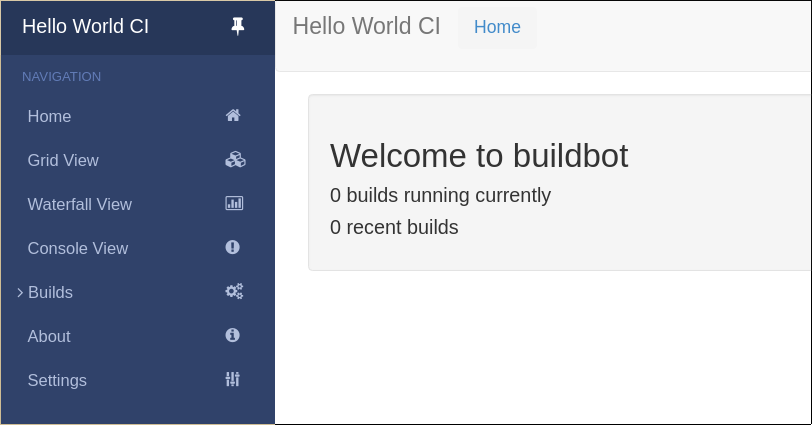
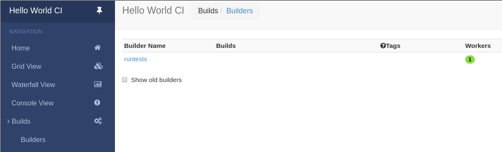

1.1. 第一次启动¶
1.1.1. 目标¶
这个教程将带你在不更改默认配置的前提下尽快的从0开始运行起你的第一个BuildBot的master和worker。
以下教程只需占用你五分钟，在这五分钟内，我们想让你相信你的第一个BuildBot是可以工作的，并且会考虑学习整个系统。 这个教程中不需要更改配置或者代码即可完成。
本教程假设你运行在Unix系统下， 如果是Windowns的话，应该也是可以的。
由于 virtualenv ，很容易将buildbot安装在独立的环境中。
对那些更加熟悉 Docker 的人，也有 docker版的教程.
你可以将本教程中的每一个代码内容直接粘贴到你的终端中。
1.1.2. BuildBot 简介¶
在你尝试运行BuildBot之前，什么是BuildBot是必要的
BuildBot是python编写的持续集成框架。 它由master进程与可能有多个分布在不同机器上的worker进程组成。 master进程通过运行一个web server来允许用户启动新的构建并且控制BuildBot实例的行为。 master也可以给worker分发构建任务。 woker进程连接到master进程，执行master下发的他们要去执行的构建的任务。
本教程中，我们将会在一台机器上运行一个master和一个worker。
更加全面的解释可以在 manual section Buildbot文档中查看
1.1.3. 准备好了¶
在你的电脑上有很多方式获取代码。我们将用最简单的一种，在 virtualenv 中使用 pip。
使用 virtualenv 的一大优势在于不会污染你的系统，一切的变更都在独立的虚拟环境中。
为了达成这种效果，你需要安装以下工具。
用你的包管理工具去安装他们吧
你需要联网，virtualenv 和 pip 会下载其他的项目，BuildBot master 和 构建进程（builder daemons）将连接 github.com 通过https协议，
获取我们正在测试的仓库；如果你需要走代理的话，需要设置 HTTPS_PROXY 或者 ALL_PROXY 的环境变量，例如通过执行 export HTTPS_PROXY=http://localhost:9080
在我们执行启动进程（master 或者 worker）命令之前。
Note
Buildbot不需要root权限 正常执行命令就可以，不需要特殊权限
1.1.4. 创建 master¶
第一步是为master创建虚拟环境，
我们将用单独的目录来掩饰 master 与 worker 的区别
mkdir -p ~/tmp/bb-master
cd ~/tmp/bb-master
On Python 3:
python3 -m venv sandbox
source sandbox/bin/activate
现在我们准备好了，我们需要安装buildbot
pip install --upgrade pip
pip install 'buildbot[bundle]'
buildbot安装好了，我们该创建master了
buildbot create-master master
通过配置文件来控制Buildbot的行为，
Buildbot 默认的配置文件是 master.cfg 。
Buildbot 自带的配置文件样例 master.cfg.sample 。
我们使用样例配置文件，不做任何更改。
mv master/master.cfg.sample master/master.cfg
最后，启动master
buildbot start master
你将会看到日志信息，在启动master的终端中，最后一行像这样
2014-11-01 15:52:55+0100 [-] BuildMaster is running
The buildmaster appears to have (re)started correctly.
我们的master至少需要一个woker去执行他的指令。为此，请看下一节。
1.1.5. 创建 worker¶
worker将执行master发送的命令，在这个教程中，我们使用buildbot/hello-world项目作为演示。 因此，你的worker需要通过执行 git 命令查看代码，确保git已经安装了，否则构建会失败。
我们对master做了什么，就对worker做一遍，为worker创建虚拟环境 完全可以在另一台机器上操作，只要 worker 所在的计算机能连接 到 master 。
mkdir -p ~/tmp/bb-worker
cd ~/tmp/bb-worker
On Python 2:
virtualenv --no-site-packages sandbox
source sandbox/bin/activate
On Python 3:
python3 -m venv sandbox
source sandbox/bin/activate
安装 buildbot-worker 的命令:
pip install --upgrade pip
pip install buildbot-worker
# required for `runtests` build
pip install setuptools-trial
现在，创建worker
buildbot-worker create-worker worker localhost example-worker pass
Note
如果你在另一台机器创建的话，你需要将 localhost 替换为运行master的机器的名字。
用户名 （example-worker） 密码 （pass） 需要与 master/master.cfg 保持一致。在 c['workers'] 部分可以看到用来验证
cat ../bb-master/master/master.cfg
最后，启动worker
buildbot-worker start worker
查看worker的输出，最后的输出行像这样
2014-11-01 15:56:51+0100 [-] Connecting to localhost:9989
2014-11-01 15:56:51+0100 [Broker,client] message from master: attached
The worker appears to have (re)started correctly.
同时在另一个终端中，在master的日志中（twisted.log 在master目录下），你可以看到像下面的这些输出
2014-11-01 15:56:51+0100 [Broker,1,127.0.0.1] worker 'example-worker' attaching from
IPv4Address(TCP, '127.0.0.1', 54015)
2014-11-01 15:56:51+0100 [Broker,1,127.0.0.1] Got workerinfo from 'example-worker'
2014-11-01 15:56:51+0100 [-] bot attached
你应该能进入 http://localhost:8010 ，你看到的web界面像这样的
点击右侧的 “Builds” 打开提交菜单然后 Builders 可以看到你刚才启动的worker（由绿色气泡标识），连接到了master
你的master 正在静静的等待hello-world项目的提交，不过这种情况不会经常发生，下一节中，我们将会看一下如何手动执行一个构建。
我们只想让你试试水，带你迈出第一步很容易，前提是我们尽可能不修改配置。你已经尝试过了， 你应该会对更多的东西感到好奇了。 让我们加紧在下一个教程中通过更改配置来进行构建。 继续查看 A Quick Tour.